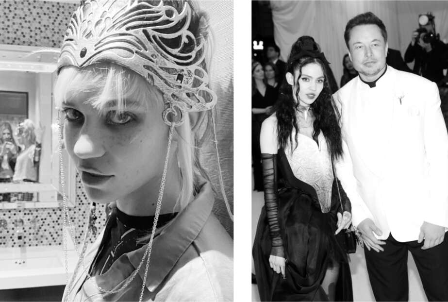

EM+CB
Thỉnh thoảng, thường vào những thời điểm phức tạp nhất, những Đấng Sáng Tạo Mô Phỏng của Chúng Ta - những kẻ tinh quái tạo ra những gì chúng ta tin là hiện thực - lại thêm vào một yếu tố mới mẻ, tạo nên những câu chuyện phụ hỗn loạn. Và như vậy, vào mùa xuân năm 2018, giữa cơn sóng thần cảm xúc sau khi chia tay Amber Heard, Musk đã gặp gỡ một nghệ sĩ âm thanh mảnh mai, Claire Boucher, hay còn gọi là Grimes, một nghệ sĩ biểu diễn thông minh và quyến rũ, người mà sự xuất hiện của cô sẽ dẫn đến ba đứa con, một cuộc sống gia đình lúc hợp lúc tan, và thậm chí là một cuộc tranh cãi công khai với một rapper mất trí.
Sinh ra ở Vancouver, Grimes đã sản xuất bốn album trước khi bắt đầu hẹn hò với Musk. Lấy cảm hứng từ khoa học viễn tưởng và meme, âm nhạc mê hoặc của cô kết hợp kết cấu âm thanh với các yếu tố của dream pop và nhạc điện tử. Cô có một trí tò mò ham học hỏi dẫn đến việc quan tâm đến những ý tưởng chiết trung, chẳng hạn như một thí nghiệm tưởng tượng được gọi là Roko's basilisk, cho rằng trí tuệ nhân tạo có thể vượt khỏi tầm kiểm soát và tra tấn bất kỳ ai không giúp nó giành được quyền lực. Đây là những điều mà cô và Musk lo lắng. Khi Musk muốn đăng một câu nói đùa về nó trên Twitter, anh đã tìm kiếm trên Google để tìm một hình ảnh, và anh phát hiện ra rằng Grimes đã đưa nó vào video âm nhạc "Flesh without Blood" năm 2015 của cô. Cô và Musk đã trao đổi trên Twitter, theo cách hiện đại, dẫn đến việc nhắn tin trực tiếp và nhắn tin văn bản.
Họ đã từng gặp nhau trước đó, trớ trêu thay, là lúc Musk đang ở trong thang máy với Amber Heard. “Còn nhớ buổi gặp gỡ trong thang máy hôm đó không?” Grimes hỏi trong một cuộc trò chuyện đêm khuya tôi có với cô ấy và Musk. “Ý tôi là, lúc đó thật kỳ lạ.”
“Trong tất cả những lần gặp gỡ,” Musk đồng tình. “Em đã nhìn anh rất chăm chú.”
“Không,” cô ấy đính chính, “anh mới là người nhìn em với ánh mắt kỳ lạ.”
Sau khi họ gặp lại nhau qua cuộc trao đổi về Roko’s basilisk trên Twitter, Musk đã mời cô ấy bay đến Fremont để thăm nhà máy của mình, ý tưởng về một buổi hẹn hò lý tưởng của anh. Đó là cuối tháng 3 năm 2018, giữa lúc đang nỗ lực điên cuồng để sản xuất năm nghìn chiếc xe mỗi tuần. “Chúng tôi cứ đi khắp nhà máy suốt đêm, và tôi nhìn anh ấy cố gắng sửa mọi thứ,” Grimes nói. Đêm hôm sau, khi lái xe đưa cô ấy đến một nhà hàng, anh ấy đã cho thấy chiếc xe tăng tốc nhanh như thế nào, rồi bỏ tay khỏi vô lăng, che mắt lại và để cô ấy trải nghiệm chế độ lái tự động. “Tôi kiểu như, ôi trời, anh chàng này thật điên rồ,” cô ấy nói. “Chiếc xe tự động bật xi-nhan và chuyển làn. Cảm giác như một cảnh trong phim Marvel.” Tại nhà hàng, anh khắc dòng chữ “EM+CB” lên tường.
Khi cô ấy so sánh sức mạnh của anh với Gandalf, anh đã cho cô ấy một bài kiểm tra nhanh về Chúa tể của những chiếc nhẫn. Anh muốn xem liệu cô có thực sự là một người hâm mộ trung thành hay không. Cô ấy đã vượt qua. “Điều đó quan trọng với tôi,” Musk nói. Làm quà, cô ấy tặng anh một hộp xương động vật mà cô đã sưu tầm được. Vào buổi tối, họ nghe Hardcore History của Dan Carlin và các podcast và sách nói về lịch sử khác. “Cách duy nhất để tôi có thể ở trong một mối quan hệ nghiêm túc là nếu người tôi hẹn hò cũng có thể nghe một tiếng đồng hồ về, kiểu như, lịch sử chiến tranh trước khi đi ngủ,” cô ấy nói. “Elon và tôi đã cùng nhau tìm hiểu rất nhiều chủ đề, như Hy Lạp cổ đại, Napoleon và các chiến lược quân sự của Thế chiến thứ nhất.”
Tất cả những điều này xảy ra khi Musk đang trải qua những rối ren về tinh thần và công việc vào năm 2018. “Anh có vẻ đang ở trong một trạng thái tinh thần rất tồi tệ,” cô ấy nói với anh. “Anh có muốn em mang đồ âm nhạc của em đến và làm việc tại nhà anh không?” Anh nói rằng anh muốn vậy. Anh không muốn cô đơn. Cô ấy nghĩ rằng mình sẽ ở lại với anh vài tuần, cho đến khi tình trạng bất ổn cảm xúc của anh lắng xuống. “Nhưng cơn bão dường như không bao giờ dừng lại, và rồi bạn cứ ở trên con tàu và tiếp tục cuộc hành trình, và tôi cứ ở lại đó.”
Cô ấy tháp tùng anh đến nhà máy vào một số đêm khi anh đang trong chế độ chiến đấu. “Anh ấy luôn tìm kiếm những gì sai với động cơ, những gì sai với hộp số, tấm chắn nhiệt, van oxy lỏng,” cô ấy nói. Một đêm nọ, họ đi ăn tối, và Musk đột nhiên im lặng, suy nghĩ. Sau một hoặc hai phút, anh hỏi cô ấy có bút không. Cô ấy lấy một cây kẻ mắt ra khỏi ví. Anh cầm lấy nó và bắt đầu vẽ lên khăn ăn một ý tưởng để sửa đổi tấm chắn nhiệt của động cơ. “Tôi nhận ra rằng ngay cả khi tôi ở bên anh ấy, sẽ có những lúc tâm trí anh ấy sẽ đi đến một nơi khác, thường là một vấn đề nào đó trong công việc,” cô ấy nói.
Vào tháng 5, tạm nghỉ khỏi địa ngục sản xuất của nhà máy Tesla, anh đã bay cùng cô đến New York để tham dự dạ tiệc thường niên của Bảo tàng Metropolitan, một sự kiện lộng lẫy với những bộ trang phục và thời trang đỉnh cao. Musk đã gợi ý ý tưởng cho trang phục của cô, một bộ trang phục đen trắng theo phong cách trung cổ-punk với áo nịt ngực bằng kính cứng và một chiếc vòng cổ làm bằng gai nhọn giống với logo của Tesla. Anh ấy thậm chí còn nhờ một người từ đội ngũ thiết kế của Tesla giúp thực hiện nó. Anh mặc một chiếc áo sơ mi trắng có cổ áo giáo sĩ và một chiếc áo khoác tuxedo trắng tinh khôi với dòng chữ novus ordo seclorum mờ mờ, một cụm từ tiếng Latinh báo trước một trật tự mới của thời đại.
Dù muốn giúp anh vượt qua những sóng gió, Grimes không phải là người có thể mang lại sự bình yên. Chính cá tính mạnh mẽ tạo nên một nghệ sĩ độc đáo như cô cũng đồng thời mang đến một lối sống khá phóng túng. Cô thức gần như trắng đêm và ngủ suốt ngày. Cô đòi hỏi cao và không tin tưởng những người giúp việc nhà của Musk, đồng thời mối quan hệ với mẹ anh cũng không mấy tốt đẹp.
Musk nghiện drama, còn Grimes lại giống như một thỏi nam châm hút drama. Dù cố ý hay không, rắc rối vẫn cứ tìm đến cô. Vào tháng 8 năm 2018, đúng lúc sự việc giải cứu hang động Thái Lan và những xáo trộn xung quanh việc tư nhân hóa Tesla đang vượt khỏi tầm kiểm soát, Grimes đã mời rapper Azealia Banks đến ở cùng nhà Musk và hợp tác làm nhạc. Cô quên mất rằng mình và Musk đã lên kế hoạch đến thăm Kimbal ở Boulder. Grimes nói với Banks rằng cô ấy có thể ở lại nhà khách vào cuối tuần. Sáng thứ Sáu hôm đó, ba ngày sau dòng tweet "tư nhân hóa" của mình, Musk thức dậy, tập thể dục, gọi vài cuộc điện thoại và thoáng thấy Banks trong nhà. Khi tập trung vào việc khác, anh thường không để ý đến những thứ xung quanh. Anh không chắc cô ấy là ai, ngoài việc là bạn của Grimes.
Tức giận vì Grimes đã bỏ buổi thu âm để ở bên Musk, Banks đã đăng tải hàng loạt lời lẽ lăng mạ trên Instagram của mình, nơi có rất nhiều người theo dõi. "Tôi đã chờ đợi cả cuối tuần trong khi Grimes chiều chuộng bạn trai mình vì quá ngu ngốc khi lên Twitter lúc phê thuốc", cô đăng. Điều này là sai sự thật (Musk chưa bao giờ dùng chất kích thích), nhưng nó đã thu hút sự chú ý của không chỉ báo chí mà còn cả Ủy ban Chứng khoán và Giao dịch (SEC). Những bài đăng của Banks về Grimes và Musk ngày càng trở nên điên rồ hơn:
LOL, Elon Musk nên thuê gái bao thì hơn. Ít nhất gái bao sẽ giữ mồm giữ miệng về chuyện làm ăn của hắn ta. Hắn ta có con nghiện ma túy bẩn thỉu, lai tạp, xuất thân từ rừng rú, chạy khắp nơi kể lể TẤT CẢ MỌI THỨ VỀ HẮN TA. Tất cả chỉ vì hắn ta cần một người đi cùng đến Met Gala để che giấu cái ấy teo tóp của mình khỏi Amber Heard LOL…. Hắn ta bị hội chứng Down. Có gì đó không ổn với người đàn ông đó. Tôi sẽ không gọi hắn ta là người ngoài hành tinh. Hắn ta là một kẻ đột biến…. Đồ khốn kiếp. Đây là lần cuối cùng tôi làm việc với một con khốn da trắng.
Khi Business Insider thực hiện một cuộc phỏng vấn qua điện thoại với cô ấy, Banks đã liên hệ tình huống này với cam kết tư nhân hóa Tesla của Musk, điều này khiến vấn đề trở nên tồi tệ hơn về mặt pháp lý. "Tôi thấy anh ta trong bếp, rúm ró lại tìm kiếm các nhà đầu tư để che đậy sau dòng tweet đó", cô nói. "Anh ta căng thẳng và mặt đỏ bừng."
Vào thời điểm đó, những câu chuyện kỳ quặc liên quan đến Musk chỉ tồn tại trong thời gian ngắn. Câu chuyện này gây xôn xao trên báo lá cải khoảng một tuần, sau đó lắng xuống sau khi Banks đăng một bức thư xin lỗi. Grimes đã biến câu chuyện này thành chất liệu cho âm nhạc của mình. Cô phát hành một bài hát vào năm 2021 có tựa đề "100% Tragedy", mà cô nói là về "việc phải đánh bại Azealia Banks khi cô ta cố gắng hủy hoại cuộc đời tôi."
Bất chấp những drama như vậy, Grimes là một người bạn đời tốt của Musk. Giống như Amber Heard (và chính Musk), cô ấy có xu hướng thích sự hỗn loạn, nhưng không giống như Amber, sự hỗn loạn của cô ấy được xây dựng trên lòng tốt và thậm chí là sự ngọt ngào. "Tính cách của tôi trong Dungeons and Dragons sẽ là hỗn loạn tốt," cô nói, "trong khi Amber có lẽ là hỗn loạn xấu." Cô nhận ra đó là điều khiến Amber hấp dẫn Musk. "Anh ấy bị thu hút bởi sự hỗn loạn xấu xa. Đó là về cha anh ấy và những gì anh ấy lớn lên cùng, và anh ấy nhanh chóng quay lại việc bị đối xử tệ bạc. Anh ấy liên kết tình yêu với việc bị đối xử tệ bạc hoặc lạm dụng. Có một điểm chung giữa Errol và Amber."
Cô thích thú với cường độ làm việc của anh. Một buổi tối, họ đi xem phim 3D Alita: Thiên thần chiến binh, nhưng đến nơi thì kính 3D đã hết. Musk vẫn nhất định ở lại xem, dù hình ảnh hoàn toàn mờ nhòe. Khi Grimes thu âm giọng nói cho nhân vật ngôi sao nhạc pop cyborg mà cô thủ vai trong trò chơi điện tử Cyberpunk 2077, anh đã xuất hiện tại phòng thu với một khẩu súng hai trăm năm tuổi và nhất quyết đòi một vai diễn khách mời. “Mọi người trong phòng thu đều toát mồ hôi hột”, Grimes kể. Musk nói thêm: “Tôi nói với họ rằng tôi có vũ khí nhưng không nguy hiểm”. Cuối cùng họ cũng đồng ý. Những bộ phận cấy ghép điều khiển học trong trò chơi là phiên bản khoa học viễn tưởng của những gì anh đang làm tại Neuralink. "Nó khá gần gũi với những gì tôi đang làm", anh nói.
Cảm nhận cơ bản của cô về Musk là anh có cách vận hành khác với những người khác. “Hội chứng Asperger khiến anh ấy trở thành một người rất khó gần”, cô nói. “Anh ấy không giỏi nắm bắt tình huống. Khả năng cảm xúc của anh ấy rất khác so với người bình thường.” Cô cho rằng mọi người nên lưu ý đến cấu trúc tâm lý của anh ấy khi đánh giá anh ấy. “Nếu ai đó bị trầm cảm hoặc lo lắng, chúng ta sẽ thông cảm. Nhưng nếu họ mắc chứng Asperger, chúng ta lại nói anh ta là đồ khốn.”
Cô đã học cách thích ứng với nhiều trạng thái tính cách của anh. “Anh ấy có nhiều luồng suy nghĩ và nhiều tính cách khá khác biệt”, cô nói. “Anh ấy chuyển đổi giữa chúng rất nhanh. Bạn chỉ cảm thấy bầu không khí trong phòng thay đổi, và đột nhiên toàn bộ tình huống chuyển sang một trạng thái khác của anh ấy.” Cô nhận thấy những tính cách khác nhau của anh có sở thích khác nhau, ngay cả trong âm nhạc và trang trí. “Phiên bản E mà tôi yêu thích nhất là người thích lễ hội Burning Man, sẵn sàng ngủ trên ghế sofa, ăn súp đóng hộp và thư giãn.” Nỗi ám ảnh của cô là Elon trong cái mà cô gọi là chế độ quỷ dữ. “Chế độ quỷ dữ là khi anh ấy trở nên u ám và ẩn mình trong cơn bão trong não.”
Một đêm, khi họ đang ăn tối với một nhóm người, tôi thấy tâm trạng Musk thay đổi. Grimes lảng tránh anh. “Khi chúng tôi đi chơi, tôi phải chắc chắn rằng mình đang ở bên đúng Elon”, sau đó cô giải thích. “Có những gã trong đầu anh ấy không thích tôi, và tôi cũng không thích họ.”
Đôi khi, một trong những phiên bản Elon dường như không nhớ những gì phiên bản khác đã làm. “Bạn nói điều gì đó với anh ấy, và sau đó anh ấy hoàn toàn không nhớ gì cả, bởi vì anh ấy đang ở trong một không gian não bộ khác”, Grimes nói. “Nếu anh ấy tập trung vào một việc cụ thể, anh ấy sẽ không bị kích thích, không tiếp nhận bất kỳ thông tin nào từ thế giới bên ngoài. Mọi thứ có thể ngay trước mắt mà anh ấy không nhìn thấy.” Giống như những gì đã xảy ra khi anh ấy còn học tiểu học.
Trong giai đoạn biến động cảm xúc năm 2018 tại Tesla, cô đã cố gắng dỗ dành anh thư giãn. “Mọi thứ không cần phải tệ như vậy”, cô nói với anh vào một đêm. “Anh không cần phải lúc nào cũng cảm thấy căng thẳng về mọi thứ.” Nhưng cô cũng hiểu, theo cách mà những người khác không hiểu, rằng sự bồn chồn của anh là động lực cho thành công của anh. Chế độ quỷ dữ của anh cũng vậy, mặc dù cô phải mất một thời gian mới nhận ra điều đó. “Chế độ quỷ dữ gây ra rất nhiều hỗn loạn”, cô nói, “nhưng nó cũng giúp hoàn thành công việc.”

Claire Boucher, được biết đến với nghệ danh Grimes, ăn mặc biểu diễn; cùng Musk tại dạ tiệc của Bảo tàng Metropolitan